Home Page
FINAL PROJECT PAGE
Project idea:
Since i often forget to turn off the lights in my living room, i wanted to make a system that makes it easier for me to switch off the lights. This is why i came up with this idea of using some sort of wireless interface controlling a hobby servomotor, that allows me to remotely control my light using any of my smartdevices.
It also has the added benefit of minimising contact with one of the most touched surfaces in my home, the switch.
Choice of microcontroller system
I will be using the ESP8266 NodeMCU Wi-Fi Dev Board. In order to allow remote access to the light switch, i have decided to use the wifi arduino. Since i already have a few of these development boards on hand, i feel like it would be a great fit to use in my project. Its small form factor also means that i can tuck the board under the lightswitch, allowing for a much more compact and portable form factor.
3D Fabrication
I started my design by first making a tight fitting bracket for my light switch. After this, i used a pair of calipers and my servo to design a mount. After a few series of sketches, extrudes and fillets, i came up with this model.
I started my design with a mount that would fit snugly on the specific light switch.
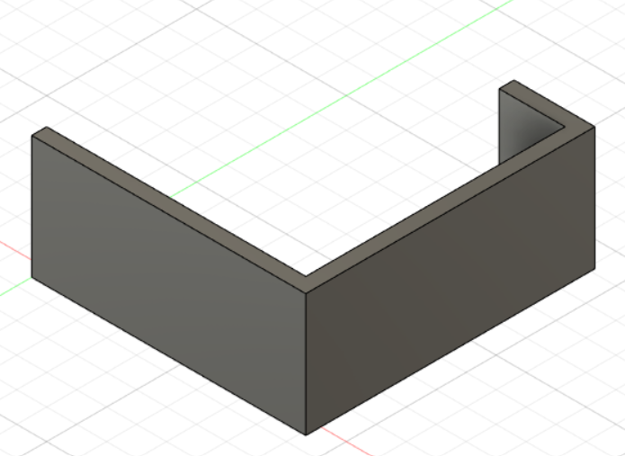Then, i added another mount for the servo, eyeballing the alignment of the arm by holding the servo in front of the lightswitch and using a pair of calipers.

After that, i linked the two parts together using a simple extrude operation.
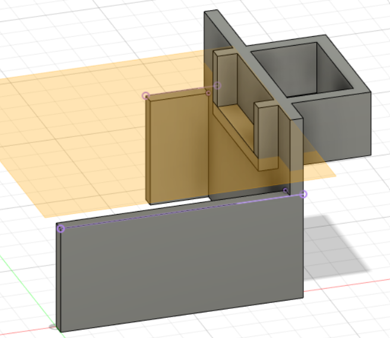I then chamfered off the sharp edges and cleaned up the support, resulting in this.
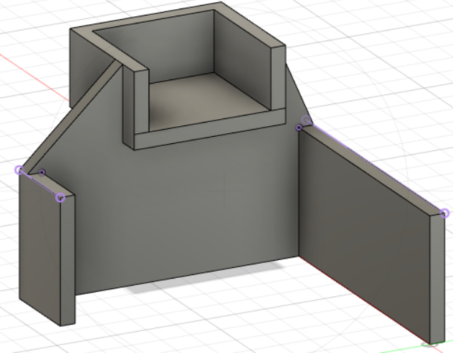In order to save filament and printing time, i made the sloped part of the servo mount slotted, by drawing a sketch with 5 lines and extruding the middle two rectangles using the cut command
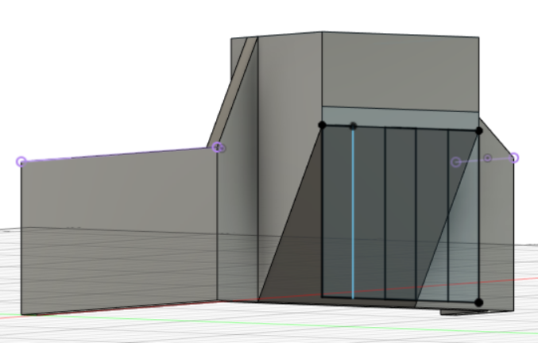 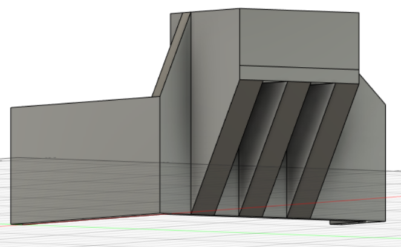Now, i needed a way to mount the ESP securely to the mount, which is why with the help of a pair of calipers, i measured and drew 4 circular profiles that would later become mounting posts.
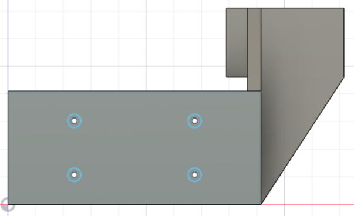After extruding...
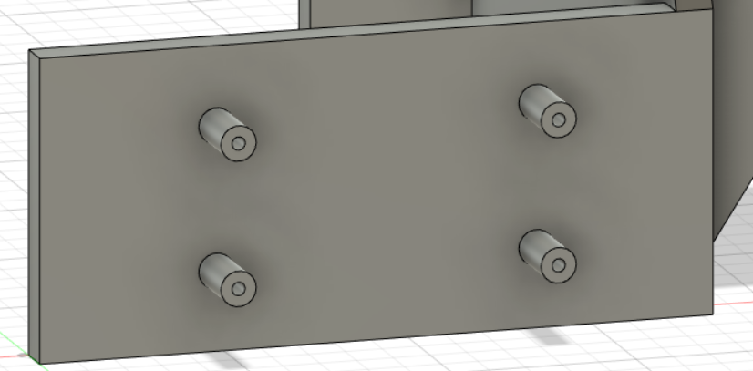After using the fillet operation to give these posts more strength...
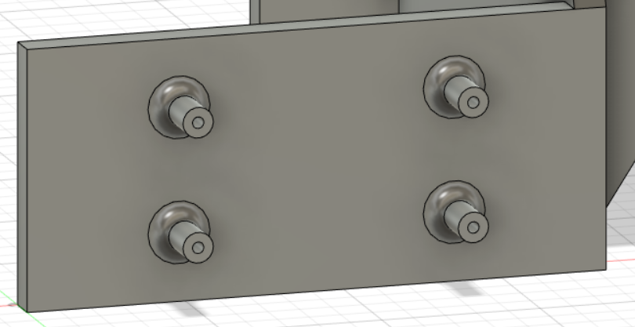Lastly, i need a hole for clearing my servo wire, which i forgot to put for my first print of this design.
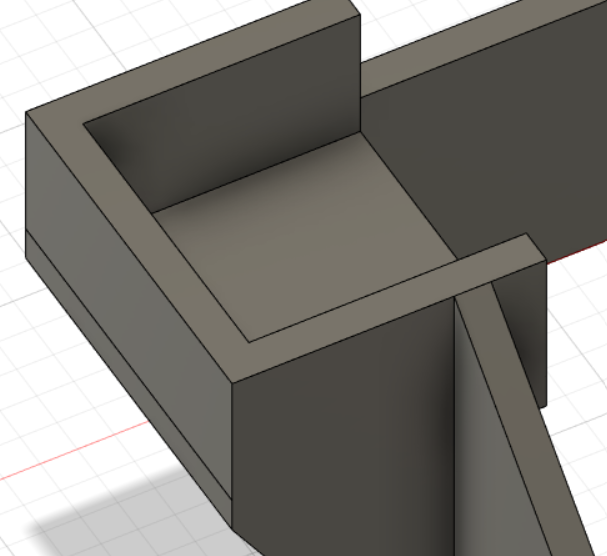After a quick sketch and extrude (cut) operation...
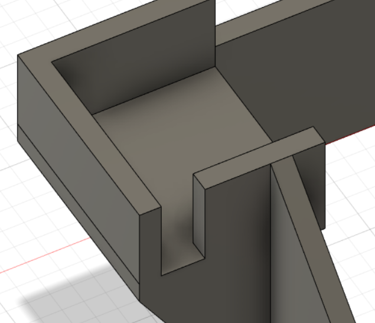Finally ready for printing!
After exporting the model as an STL, i put the files inside Cura and prepared it for printing. Printing it at 0.28mm layer height, it gave me an estimate of about 6 hours to complete.
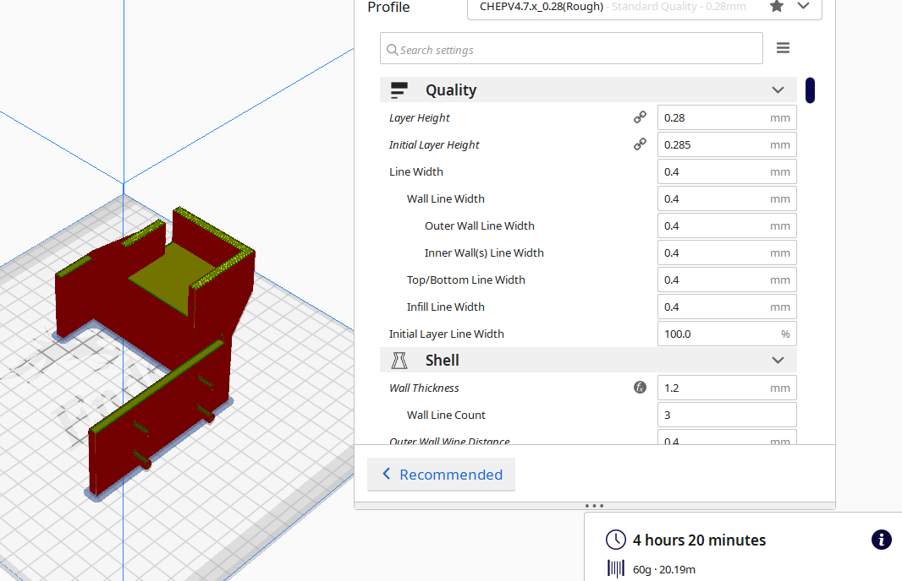
Fortunately, my servos and dev board fit snug-ly and i did not have to compensate for expansion.
I then depinned my nodeMCU in order to make space for the wiring harness and servo cable (the jumper wires would not allow the entire mounting system to sit flush with the wall).
However, i once i connected the servo directly to the dev board, it was not able to move. After probing around with a multimeter, i found out that the onboard regulator was only designed for small signal devices and not high current devices like servomotors. The servo was overloading the 5V bus and pulling the bus to 3V, leading to the ESP resetting everytime the servo is commanded to move.
This is why i had to add an external buck regulator to step down the 7.4V, 2 cell LiPo power into a more suitable 6V for the servo and microcontroller.
This is the buck converter i will be using to power my project.
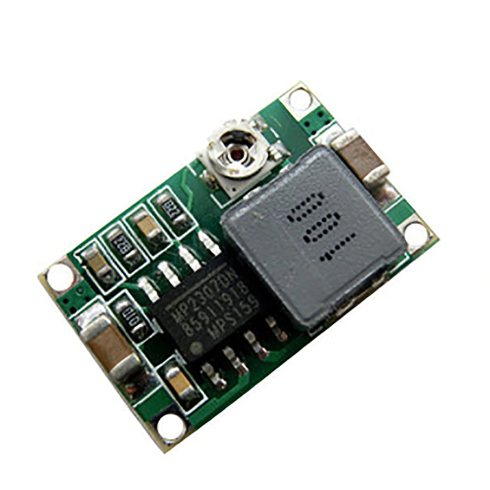
Due to the lack of space, i will be mounting the PSU to the bottom of the WiFi module using double sided acrylic tape, which, according to 3M, can withstand up to 150 degrees celcius.
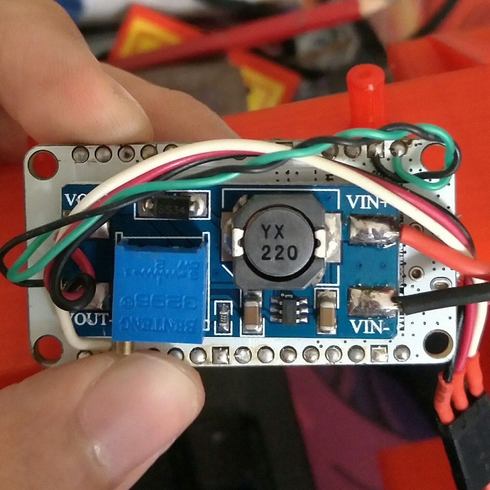
So, why did i choose 6V instead of 5V?
Since most servos are capable of 6V power and the microcontroller is 10V tolarant, i have decided to go with 6V bus voltage as it gives the servo more torque and rotational speed. Furthermore, the power supply module had a trimpot that let me easily adjust the bus voltage
However, running my servo on 6 volts also means that more current is drawn. For example, at 5VDC, the Futaba S3003 servo draws only 7.2mA while on 6V, it draws 8mA (unloaded).
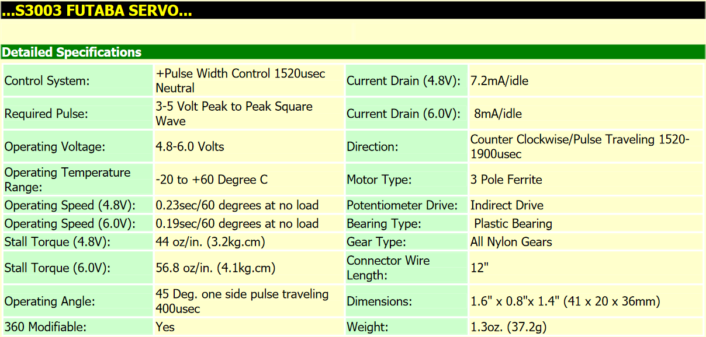
This is my final prototype, which uses a nodeMCU v3, full size futaba servo, mini buck converter(switching power supply) together with a lithium battery, and a few hunderd grams of printed and cut plastic (PLA, Acrylic). 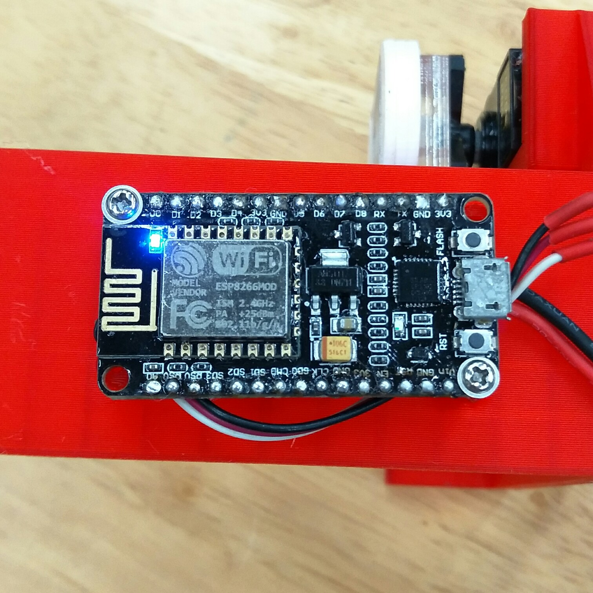 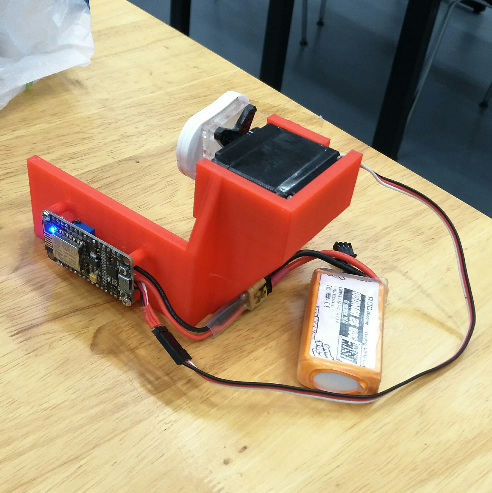 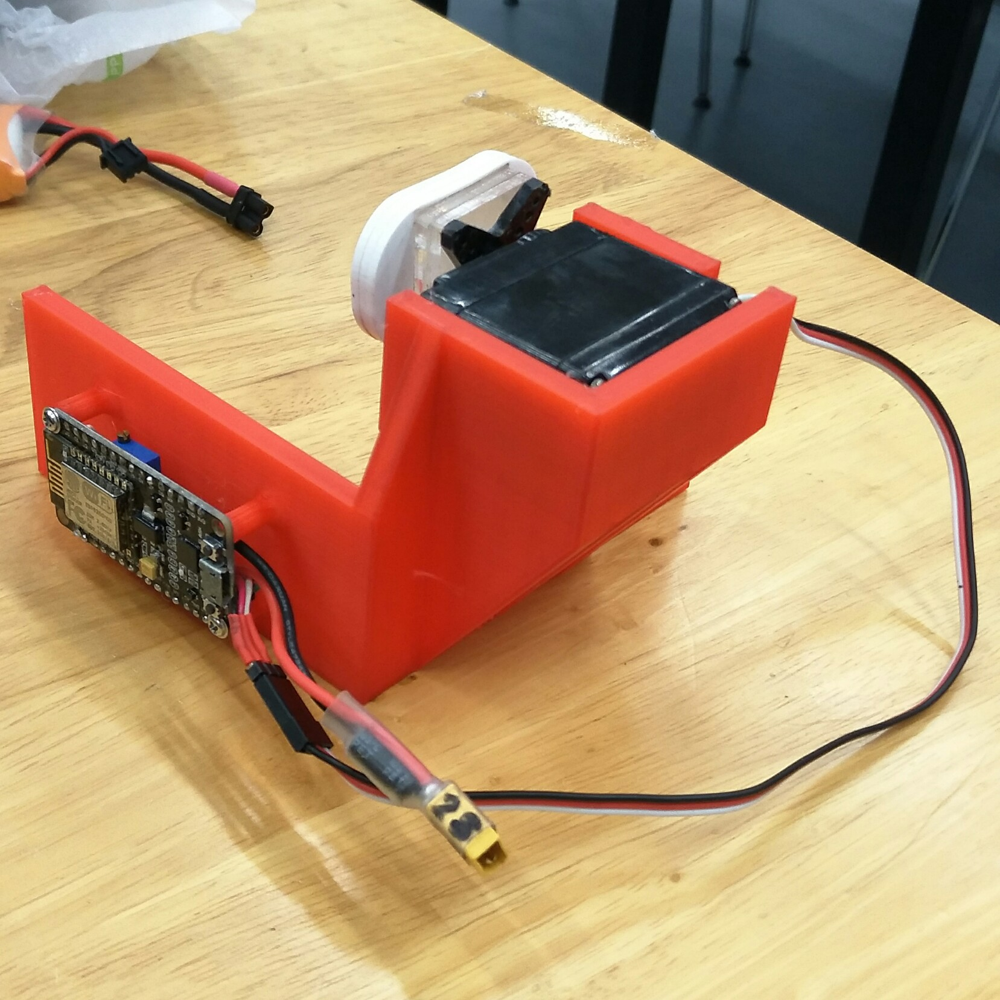
A brief explaination of how the project works
- When powered, the nodemcu starts up a WiFi access point named "DFAB project"
- After this, the servo is initiallised to its neutral position
- By connecting to this WiFi network and going to the webpage ip (192.168.4.1), any device can access the remote interface and send HTML commands to the dev board using the simple HTML buttons.
- When the on button is pressed, a variable called DX80 is set to 1, triggering the servo, which will move down, then up
- When the off button is pressed, the DX80 variable is set back to zero, which will trigger the servo motion of moving down then up again.
| Item | Quantity |
|---|---|
| NodeMCU DEVKIT 1.0 | 1 |
| Futaba S3003 Servo | 1 |
| XT30 battery connector w capacitor | 1 |
| 850mAh LiPo battery | 1 |
| 3D printed holder | 1 |
| Laser-cut acrylic servo arm | 1 |
Source files
nodeMCU codeServo arm design
Poster (click on image for full size):
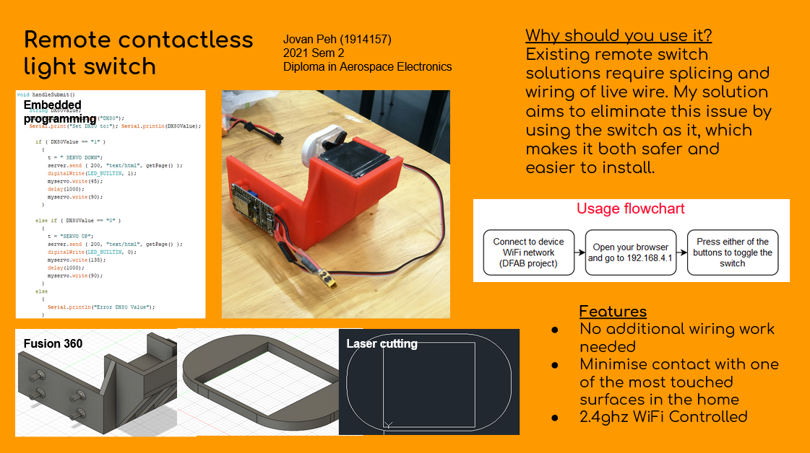{kind=link}